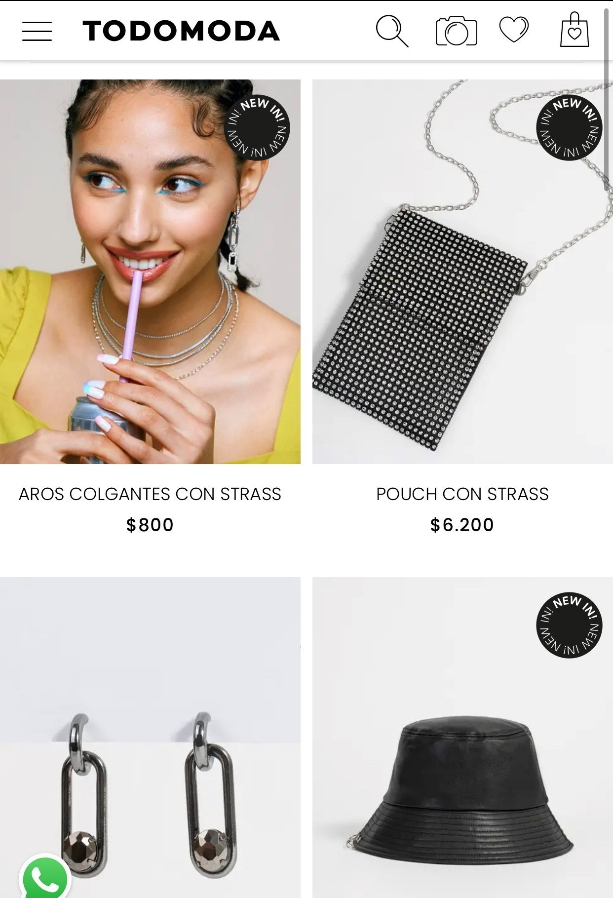

Repetition
Todomoda's Site:www.ar.todomoda.com
Todomoda's website exemplifies repetition because of the focus on creating consistency using the same position in all the elements. I used the page of their new collection that shows first the picture of the article, then the name and the price as the last part of the information. It creates a visual pattern for all the products forming a more accessible and useful user experience.
Emphasis
Spotify's Site: www.spotify.com
Spotify's website exemplifies emphasis because the page is looking for the user to subscribe to their premium package and the first section that a user sees when he enters the page is a discount for the subscription. Below the user can see the benefits of the premium subscription, and after the benefits the page shows every subscription plan so you can choose the one you prefer. This page creates emphasis on the product that the Spotify website is offering.
Visual Hierarchy
Apple's Site: www.apple.com
Apple's website exemplifies visual hierarchy because the website shows its most recent products first to make the users know what their new products are. This creates a pattern of importance for the users. The new products are first because putting them first will attract more people to investigate and learn about them, and as a result of this election, the new products will be more sold.